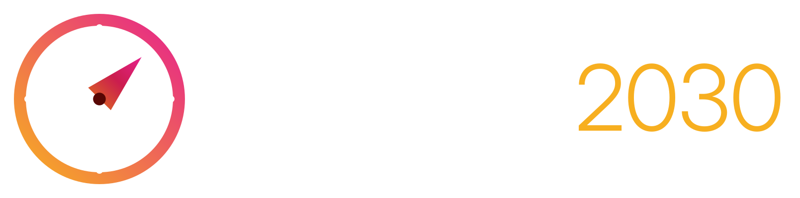

Impacto da IA no Trabalho 2030
A IA não está acabando com os empregos. Está dividindo o mercado.
Uma empresa de 35.000 colaboradores tem medo da IA e um orçamento de R$ 15 milhões para investir. Analisamos 3.755 salários reais e 3.200 postos de trabalho para mostrar quem ganha, quem perde e onde o dinheiro faz diferença.
01 • Vagas
+6,33 Mil
Saldo líquido global de vagas
02 • Salário
+18,0%
Variação salarial média
03 • Escolaridade
39,28%
Taxa de Elevação de Escolaridade
04 • Risco
15,2%
Vagas em alto risco
Inteligência Artificial • Co-Piloto de Produtividade
3.755 Salários Reais • 3.200 Postos Modelados
Efeito Amplificação vs. Substituição
Filtros
A IA não está simplesmente “destruindo todos os empregos”. Ela provoca uma bifurcação severa no mercado.
O mercado não encolhe. Ele se divide.
Tecnologia e Saúde criam vagas e pagam mais. Varejo, Mídia e as rotinas de escritório perdem espaço para a automação.
Saldo Líquido de Vagas por Indústria
Keynote
Polarização setorial: só Tecnologia (+12,91 mil), Saúde (+2,82 mil) e Educação (+2,45 mil) sustentam o saldo positivo, compensando o encolhimento de tarefas operacionais em Varejo, Mídia, Jurídico e Finanças.
Distribuição de Risco
3,2 Mil
Postos mapeados
Keynote
A amplificação predomina: 51,5% das ocupações estão na zona de Amplificação Humana, contra 25,4% em Alto Risco.
Maior ganho salarial projetado
Engenheiro de Machine Learning
+45,5%De $132.000 para $192.000 anuais, com foco em MLOps & LLM Orchestration.
Quartil 4 de exposição à IA
Quartil de maior exposição
$169.220 • Vagas ↓5,1%Os salários mais altos do mercado, mas com risco agudo de retração nas vagas rotineiras.
Resiliência em funções presenciais
Atendimento & Assistência Presencial
40,4%Baixa automação de tarefas manuais diretas e alta estabilidade de postos de trabalho.
Quem usa a IA ganha. Quem faz tarefa repetitiva perde.
A matriz cruza o risco de automação até 2030 com a variação dos salários. A IA não afeta todas as profissões igual: valoriza decisões complexas e pressiona funções operacionais repetitivas.
Amplificação
Risco < 30%Usam a IA como aliada para produtividade e conquistam os maiores aumentos.
Gestores de Portfólio+35% sal. | +26% vagas
ML Engineers+31% sal. | +45% vagas
Pesquisa Biomédica+29% sal. | +32% vagas
Supervisão
Risco 40–60%O papel humano vira validação e auditoria dos sistemas autônomos.
Auditoria de RiscosGanhos focados em governança.
ComplianceAumentos entre +10% e +25%
Compressão
Risco > 70%Funções operacionais substituídas diretamente pela tecnologia.
Caixas Bancários-16% sal. | -53% vagas
Copywriters-15% sal. | -38% vagas
Codificadores Médicos-14% sal. | -48% vagas
Matriz de Disrupção Salarial
Os 5 que mais ganham. Os 5 que mais perdem.
↑ Top 5 Vencedores • AmplificaçãoPrêmio salarial
Funções em que a IA multiplica a produtividade e exige orquestração técnica, pensamento crítico ou decisão estratégica.
| Posição / Cargo | Setor | Ganho salarial | Vagas 2030 |
|---|---|---|---|
| 1. Gestor Quantitativo de Portfólio | Serviços Financeiros | +35,16% | +26,89% |
| 2. Engenheiro de Machine Learning | Tecnologia | +31,91% | +45,45% |
| 3. Cientista de Pesquisa Biomédica | Saúde | +29,63% | +32,84% |
| 4. Especialista em Ameaças Cibernéticas (IA) | Tecnologia | +29,29% | +43,75% |
| 5. Engenheiro de Plataforma de Dados | Tecnologia | +28,24% | +38,10% |
↓ Top 5 Vulneráveis • DeslocamentoCompressão de renda
Funções com tarefas rotineiras, analíticas básicas ou operacionais: perdem salário real e vagas ao mesmo tempo.
| Posição / Cargo | Setor | Retração salarial | Vagas 2030 |
|---|---|---|---|
| 1. Caixa de Agência Bancária | Serviços Financeiros | -16,28% | -53,49% |
| 2. Redator & Criador de Conteúdo | Mídia e Comunicação | -15,25% | -38,71% |
| 3. Codificador de Prontuários Médicos | Saúde | -14,09% | -48,28% |
| 4. Revisor de Documentos Jurídicos | Jurídico | -13,71% | -40,63% |
| 5. Digitador de Dados | Serviços Financeiros | -13,33% | -54,55% |
DiagnósticoO topo do mercado captura até +35,16% de bônus salarial supervisionando sistemas multiagentes, enquanto funções repetitivas perdem mais de 50% dos seus postos.
Mais estudo exigido. Diploma ou microcredencial?
O que os dados dizem: setores muito regulados inflacionam diplomas, enquanto habilidades aplicadas (MLOps, Prompt Engineering) dão razão ao CDO.
Taxa de elevação de escolaridade
39,28%
dos postos exigem diploma superior
Setor líder
Serviços Financeiros
73,5% de elevação formal
Setores acima de 45%
4
Finanças, Jurídico, Educação, Varejo
Taxa de elevação de escolaridade por indústria
Polarização de titulação: Finanças (>70%), Jurídico e Educação exigem mais titulação para auditar a IA; Tecnologia (<20%) prioriza skills práticas.
Vagas por nível — Pré-IA vs 2030
Salto na pós-graduação: Mestrado sobe de 9,66% para 25,91%; Ensino Médio cai de 50,06% para 37,41%.
Habilidades técnicas mais valorizadas
Prática em laboratório
Upskilling & Automação Avançada
Treino prático em Visão Computacional, Engenharia de Prompt e Sistemas Autônomos, preparando os profissionais para o salto de titulação e protegendo contra o deslocamento.
Onde investir os R$ 15 milhões
Simule ao vivo o retorno (ROI) e o payback de requalificar ocupações vulneráveis para trilhas de alto valor.
Resolução do debate estratégico
O caminho factual para o fundo de R$ 15M
Subsidiar pós-graduações genéricas de 2 anos (defesa do RH) expõe a empresa ao risco imediato. A requalificação ágil em microcredenciais (defesa do CDO) converte profissionais de alto risco em “Co-Pilotos IA” com payback inferior a 3 meses e mitigação de até 60% do risco de automação, garantindo a sobrevivência estrutural.
Parâmetros da transição
Premissas do fundo
Projeção de retorno & mitigação
—Salário base 2030 (origem)—
Novo salário projetado—
Ganho anual líquido—
Redução no risco de automação—
Competências críticas desenvolvidas
Investimento nesta trilha—
Uso do fundo de R$ 15M—
Payback por colaborador—
Ganho salarial agregado / ano—

E você, onde está?
Envie seu currículo e descubra seu risco até 2030.
Quatro fases para transformar risco em vantagem
Roadmap estratégico e alocação do orçamento corporativo de R$ 15 milhões.
A alocação estratégica do orçamento de R$ 15 milhões prepara a organização para a disrupção da IA, convertendo um risco de obsolescência em vantagem competitiva sustentável.
Em vez de pagar os altos custos de demissões em massa e recontratações, o plano estrutura a retenção e o desenvolvimento de capital humano em quatro fases integradas:
FASE 01
Diagnóstico & Mapeamento
R$ 1,5MCenso de competências com 35 mil colaboradores e segmentação de riscos no Power BI, eliminando investimentos redundantes.
FASE 02 • FAST-TRACK
Trilhas de curta duração
R$ 8,0MBlindagem operacional (Grupo A) e aceleração de devs/analistas (Grupo B): Reskilling, Supervisão de IA e Liderança Ágil.
FASE 03 • DEEP-TECH
Trilhas de média/longa duração
R$ 4,5MFormação interna de ponta: especializações robustas em MLOps, Cibersegurança, Gêmeos Digitais e Modelagem Avançada.
FASE 04 • MOBILIDADE
Governança, Talent & ROI
R$ 1,0MInternal Talent Marketplace e governança contínua via Power BI para reduzir atrito e sustentar o longo prazo.
ROI estimado • Retorno do investimento
>85%Engajamento dos colaboradores
-30%Turnover voluntário
Redução direta de custoscom contratação externa e rescisões
O dashboard em ação
Veja em poucos segundos como o painel em Power BI responde: um clique no setor filtra riscos, escolaridade e salários ao mesmo tempo, e mostra onde a IA amplifica e onde ela substitui.
Baixar dashboard (.PBIX)
Abra no Power BI Desktop e explore todos os filtros.
O time por trás do projeto
Pensamos em uma solução 360°: além de analisar os dados, transformamos a pesquisa em insights, em um dashboard em Power BI e na Bússola 2030. Ferramentas que ajudam empresas a decidir, o RH a planejar e cada profissional a entender como se adaptar aos avanços da IA.